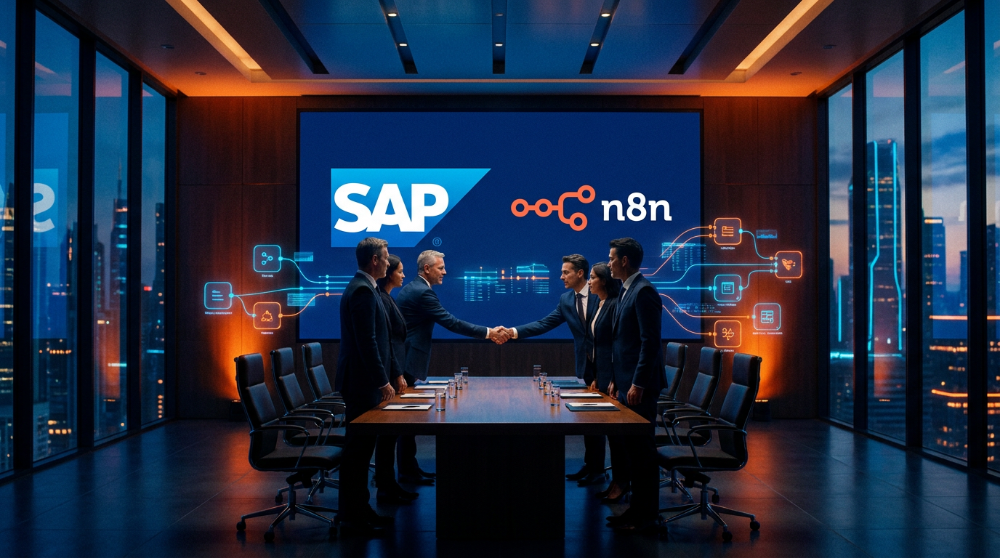

"Agentic AI must be grounded in deep process knowledge, reliable data, and enterprise-grade governance."
— Christian Klein, CEO, SAP — SAP Sapphire, May 2026
On the opening day of SAP Sapphire 2026, SAP announced a strategic investment in n8n — the Berlin-based AI workflow orchestration platform — at a valuation of $5.2 billion, more than double n8n's previous valuation of $2.5 billion set just eight months earlier. The deal is not an acquisition: SAP takes a minority stake of approximately 1.3%, with an investment reported at over €60 million. But the accompanying multi-year commercial agreement, which will embed n8n natively into SAP's Joule Studio environment, makes this one of the most consequential enterprise software partnerships of 2026.
What Is n8n?
Founded in Berlin in 2019 by Jan Oberhauser, n8n (pronounced "n-eight-n") is a workflow automation and AI orchestration platform built around an open, node-based visual editor. Unlike consumer-grade automation tools that trade power for simplicity, n8n is deliberately built for depth: developers can write JavaScript or Python directly inside nodes, handle complex branching logic, and design multi-agent AI pipelines that reason over data, call external tools, and loop through decision trees — all within a governance framework that enterprise IT teams can audit and control.
By the time of SAP's investment, n8n had reached 1.7 million monthly active builders in its community and 1,400+ enterprise customers, including Fortune 500 teams. Its library of over 1,000 pre-built integrations covers the full spectrum of enterprise software — from Salesforce and ServiceNow to Microsoft 365, Slack, and dozens of AI APIs. A $180 million Series C round led by Accel in October 2025, with participation from Nvidia, Meritech, and Redpoint, had already signaled that n8n was becoming infrastructure-grade software. SAP's investment confirms it.

Why This Deal Happened Now
To understand the timing, you need to understand a persistent gap in the SAP ecosystem. SAP has long dominated the management of complex enterprise processes — finance, procurement, supply chain, HR — inside its own applications. But connecting those applications to the expanding universe of external tools, cloud services, and AI-driven systems has always required either expensive middleware or bespoke ABAP development that only a fraction of SAP's customer base can afford.
SAP's Business Technology Platform (BTP) is the company's answer to this integration challenge. BTP's Integration Suite is powerful but carries a steep learning curve and a pricing model that can make broad adoption across an organization difficult. The result: many SAP customers still rely on fragile point-to-point integrations, Excel-based workarounds, or third-party iPaaS tools that have no native awareness of SAP data models.
n8n addresses this gap directly. Its visual workflow editor is approachable enough for citizen developers, while its underlying architecture is powerful enough for enterprise engineering teams. More importantly, the platform is designed for the kind of mixed workload that defines modern enterprise automation: deterministic logic for single-outcome tasks (compliance checks, billing updates, data synchronization) combined with agentic systems for probabilistic judgment calls (ticket triage, exception classification, anomaly analysis).
Strategic Fit
n8n fills the "middle layer" between BTP's enterprise-grade Integration Suite and the simplicity that line-of-business users demand. It is the automation engine SAP's platform was missing — and the investment locks in a multi-year commercial commitment before competitors can move.
Joule Studio: The Integration That Changes Everything
The technical heart of the SAP-n8n partnership is the embedding of n8n's visual canvas directly into Joule Studio — SAP's managed, governed development environment for building AI agents on the SAP Business AI Platform. General availability of this integration is targeted for Q3 2026.
The resulting stack combines three layers into a single development environment:
- Joule agent definition — developers specify the agent's goals, data scope, and governance rules in natural language using Joule Studio's intent-based interface.
- n8n workflow orchestration — n8n's visual canvas handles the execution: conditional logic, error handling, retries, and the 1,000+ pre-built connectors to SAP and non-SAP systems.
- SAP Knowledge Graph grounding — all agent decisions and workflow executions are logged against SAP's enterprise data model, providing auditable, GDPR-compliant execution trails.
The practical impact is dramatic. SAP demonstrated completing end-to-end automations in 10 to 15 minutes using intent-based development in Joule Studio with n8n — compared to the 3 to 4 days typically required by traditional integration approaches. For enterprise teams that have spent years waiting weeks for IT to build integrations, that compression is transformative.
This integration also directly amplifies SAP Joule, the company's generative AI copilot embedded across its application suite. Where Joule has until now been primarily assistive — answering questions, generating reports, drafting communications — the n8n layer gives it an execution backbone. A Joule instruction can now trigger a multi-step n8n workflow that spans SAP and non-SAP systems without any additional coding.
The Agentic AI Context
The SAP-n8n deal is best understood in the context of the broader enterprise shift from AI as a query interface to AI as an autonomous agent. Rather than simply answering questions, AI agents take actions — they read emails, update records, trigger downstream processes, and coordinate across systems with minimal human intervention. This is the operating model that SAP's CEO Christian Klein described at Sapphire as requiring "deep process knowledge, reliable data, and enterprise-grade governance."
n8n has been building exactly this capability. Its support for agentic loops — structured orchestration cycles where an AI model reasons, acts, observes the result, and reasons again — is among the most mature in the workflow automation market. Where generic automation tools execute linear sequences of steps, n8n can model the iterative, branching behavior that characterizes real enterprise processes.
For SAP customers, this means the path from "Joule, handle this vendor exception" to a fully automated, multi-system resolution workflow just became significantly shorter. The combination of Joule's natural language interface, n8n's orchestration engine, and SAP's deep process data is a credible foundation for what SAP calls the Autonomous Enterprise — its strategic vision for AI-driven business operations.
What to Watch
The Q3 2026 GA of n8n inside Joule Studio is the near-term milestone that matters most. Early adoption data — how many SAP customers activate the integration, what use cases see the most traction, whether the 10–15 minute development promise holds at enterprise scale — will determine whether this partnership delivers on its strategic promise.
What It Means for SAP's Competitive Position
The investment reshapes SAP's competitive position in enterprise automation on multiple fronts simultaneously.
Against Microsoft, which competes with SAP across ERP, HR, and CRM, the deal intensifies the battle for the automation layer. Microsoft Power Automate is deeply embedded in Microsoft 365 and Dynamics 365 environments. n8n inside Joule Studio gives SAP customers a comparable native automation capability that is arguably more developer-friendly and more AI-ready than Power Automate's current feature set.
Against ServiceNow and Salesforce, which have each invested heavily in workflow automation as a platform differentiator, SAP with n8n becomes a more credible competitor for automation workloads that span ERP and adjacent enterprise systems. The 1,000+ n8n connectors make cross-platform orchestration — historically a weakness of SAP-centric automation — a genuine strength.
For SAP S/4HANA customers specifically, the timing is significant. With SAP's 2027 migration deadline driving large-scale cloud transformation programs, the addition of a native AI workflow automation layer addresses one of the most common concerns in S/4HANA migration projects: how to automate the operational processes that run alongside the core ERP, without accumulating a new layer of fragile integrations.
Practical Steps for SAP Customers
For technology and business leaders at SAP organizations, here is a practical framework for the next 12 months:
- Evaluate your automation debt. Map the point-to-point integrations, custom scripts, and manual handoffs that currently bridge SAP and non-SAP systems. These are the immediate candidates for n8n-driven consolidation once the Joule Studio integration reaches GA in Q3 2026.
- Pilot n8n today. The self-hosted community edition is free and fully functional. Build two or three controlled pilots around high-volume, rule-based processes in finance, procurement, or HR before the BTP-native version arrives. The learning will transfer directly.
- Engage your SAP account team. SAP will begin bundling n8n capabilities into enterprise agreements. Understanding the commercial roadmap now — pricing tiers, BTP consumption credits, licensing transitions — positions you to negotiate favorable terms before demand increases.
- Invest in developer skills. n8n rewards teams with JavaScript or Python proficiency. The low-code canvas lowers the barrier to entry, but the platform's full power is unlocked by developers who can write custom node logic. Identify and develop that capability now.
The Bottom Line
SAP's strategic investment in n8n at a $5.2 billion valuation is one of the most important enterprise software deals of 2026. It is not an acquisition — n8n remains independent, its fair-code community model intact, its 1.7 million builders unaffected by enterprise ownership dynamics. But the multi-year commercial partnership embedded in the deal makes the SAP-n8n relationship far deeper than a typical financial investment.
For the enterprise technology market, the deal signals something important: the next phase of AI competition will be won or lost on the automation layer. Not on ERP functionality — which is largely commoditized — but on the ability to connect, orchestrate, and intelligently automate across the full ecosystem of enterprise applications, data, and AI services. SAP, with n8n embedded in Joule Studio, now has a credible claim to that layer.
The Q3 2026 GA is the moment to watch. If the 10–15 minute automation promise holds at enterprise scale, and if the governance story around SAP Knowledge Graph grounding proves as robust as advertised, this partnership could define how enterprise AI moves from experimentation to execution.